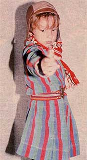
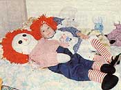
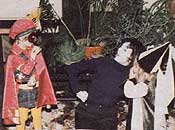

Collect a few hats and a heap of old clothing . . . and watch your youngsters' imaginations run wild!
ABOVE: With a bit of "fashion magic", our five-year-old son is transformed into Sherlock Holmes. BELOW: Specially made costumes are fun, too. Here, our two-year-old is just a "living doll"! FAR BELOW: Digging into the costume box is a pastime the whole family enjoys.
Paula and Keith White
There's a magical box in our house which-on dreary winter afternoons-brings make-believe characters to life! We call it "the costume box". On first glance, our carton of mismatched clothing might be mistaken for a collection of well-worn hand-me-downs about to be retired to the rag pile. But we've discovered that, by using a bit of creative thought, we can turn the remnants into a wondrous array of colorful costumes.
Most folks, of course, remember getting decked out in Mom's and Dad's old clothing to play "dress-ups" or "grown-ups". Well, our costume box is simply an extension of that children's pastime. And the only stipulation for opening its lid and rummaging through its contents is that the wearers-to-be (adults included! ) be willing to escape into a child's world of fantasy.
AMATEUR ACTING
Our five-year-old son has been delving into the costume box since before he was two years of age. As a matter of fact, it was as a result of his desire to "dress up" that he learned the mechanics of putting on and taking off clothing, and mastered the how-to of snaps, zippers, buttons, and buckles. (He still has some trouble tying his shoes . . . but so far all of his "creations" have worn boots!)
With the help of the costume box, our youngster has transformed himself into a multitude of characters . . . ranging from a cowboy and a fireman to more unusual figures such as a gnome, an orchestra conductor, a boxer, and even the Nutcracker from the Tchaikovsky ballet.
Our daughter, who is now two years old, is already following her brother's lead . . . so no doubt we'll soon be receiving even more "visitors" from various periods of history and different walks of life. (How many households have the privilege of entertaining tin soldiers, astronauts, and a king and queen all in one day?)
In addition to being a wonderful source of entertainment, the costume box has proved to be a tremendous learning tool. Frequently, after a new character has emerged out of the bundle of rags, our family will wind up studying events or facts that have to do with-or are suggested by-that particular person. For example, after donning the garb of Captain Kirk (from the television science fiction series Star Trek), our son began asking questions about the solar system. Now-after researching the subject-he can name all the planets and find Mars, Jupiter, and Venus in the night sky. At the moment we're reading about the culture of ancient Athens . . . spurred on by a five-year-old decked out in a Grecian tunic!
If the youngsters in your family are the least bit prone to theatrics (and most children are), you can easily put together a costume box and join the fun. All it'll take to get started is an afternoon or two of creative scrounging!
SETTING THE STAGE
Finding potential costumes is-literally"child's play". Our offspring have made the task into a family hobby, and they have as much fun designing the outfits as they do wearing them.
Your own home is likely a good place to begin searching for appropriate attire. (You'd be amazed at how many medieval figures can be brought to life by making a simple cape out of a towel and a safety pin . . . and at how well a pair of pajamas can double as a space suit.) Thrift stores and garage sales are also excellent sources of costumes. And don't overlook the possible "finds" on sale racks in clothing stores.
Remember to include hats and props as you assemble the wardrobe, too. Such accessories can often-by themselves-create the aura of a particular character. (A hat tree, a prop shelf, and an odds-and-ends drawer flank our costume box, allowing the children to add the finishing touches to their clothing creations.) The most important guideline to keep in mind when picking out an outfit is to look at each garment or object not as what it is, but rather as what it might become. By applying some ingenuity, and spending a dollar or two, you and your children should be able to come up with a whole passel of costume makings. You'll soon discover that your "hobby" is contagious, too . . . as friends and relatives offer their ideas and items for your collection.
In addition, if someone in your family is handy with a needle and thread, you can make a few special costumes (such as the Raggedy Ann outfit shown in the photo). But whenever you stitch up a design, always abide by the following rule: Sew the outfit the way your child wants it to look rather than as you think it should be. And then, be prepared to take that costumed young'un out in public every so often!
Once you have assembled a magical wardrobe in your home, we think your children will agree that there are few better ways to spend a wet or dreary afternoon-in winter or summer-than by digging into the costume box!
|
 |
 |
 |